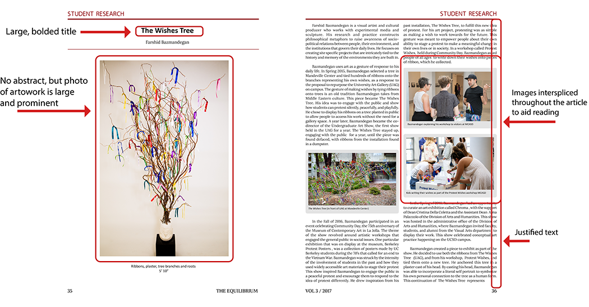

Designer
Usability researcher
Development
9 months
Feb 2017 - July 2017
Team of 3
Adobe InDesign
Competitive Analysis
Interviews/Surveys
The Equilibrium is a relatively new organization, and because of this, branding and design has been inconsistent and experimental. For this issue, we wanted to make the journal more professional, coherent, and consistent. Since The Equilibrium is an interdisciplinary research journal, a particular challenge was presented: How do we create an effective page layout that clearly showcases, represents, and supports all types of research, regardless of the research field.
In order to gauge what features users enjoyed or were confused by, user interviews were conducted. Questions were asked to evaluate the effectiveness of a design choice. Questions included, but were not limited to: "What is your initial response to the journal?" "Were there moments/pages where you found it hard to read/understand?" "What is one aspect that you would improve?"
I used these interviews to frame and contextualize the design choices for the new issue of the journal. From the interviews, I gathered that a major challege was creating a uniform presentation, especially within the a single journal issue itself. Major points were to standardize the page frames, color used, and page layouts for easier readability.
Between volumes, design changes didn't quite make sense. Overall journal design should be consistent.
"Flipping through the pages, I didn't like how there wasn't any consistency among sections. I think most major publications have a similar style/theme for "Professor Spotlight" vs. "Student Research"."
Within specific sections of the journal (student research, professor spotlights, etc.), the design is consistent and easy to read.
"I really love the color scheme and font colors on the 'Professor Spotlight' section - the consistent color of the professor name and questions makes it super easy."
For a more polished look, make the pages cleaner. For example, text justification, figure placement, text size, titles, etc.
"I sometimes feel that there is something missing and/or not done. When I think of a research journal, I think of clean, professional, academic."
The journal doesn't have much branding beyond the maroon color. This is an opportunity to make the journal stronger as an organization.
"Branding could be done to make the journal presence and image stronger. Right now, it could just be any academic journal."
To create a professional journal layout, I examined current scientific journal layout designs.
In order to improve the journal, we had to understand where the journal currently stood. What was working? What could be improved? Based on the user interviews, we wanted to improve the branding of journals, create a more consistent layout between journal issues and within sections of a single issue, and make sure small details were attended to.
Below are the covers of the first two issues. We decided to tackle the branding challenge with the cover of the journal issue because the cover is the first thing that people see. Creating a consistent layout and cover will allow users to immediately see that the journal is The Equilibrium without really reading it.
Below, are examples of inconsistencies that we wanted identified in the 2016 issue. We wanted to get rid of these small inconsistencies in order to create a more clean, professional look. At the same time, we wanted to integrate design choices that we identified in the competitive analyses.
Because the journal is interdisciplinary, we had to adapt page designs to suit different types of research. For example, the 2017 issue contains research from the engineering, economics, and visual arts research pages.
Base Resarch Layouts:
These two iterations have different characterisitcs, but also have similar characteristics that were based on the competitive analysis that was previously done.
Alternative Research Layout:
This is a layout for the visual arts research page.

After several iterations, I selected design choices that communicated a professional, clean research journal. At the same time, I wanted to create a layout that was accessible to a wide range of possible readers.
Finding a clean design that was versatile and able to accomodate different types of research was particularly challenging and interesting. Since some research submissions are more visual based (photos, graphs, and tables), the layout had to be able to include essential figures while also be adaptable to those that did not have many figures. Choosing the two column format allowed images to be interspersed within the text and provided visual detail that preemptively prevents articles from becoming large blocks of text. Click the link below to see the full journal!